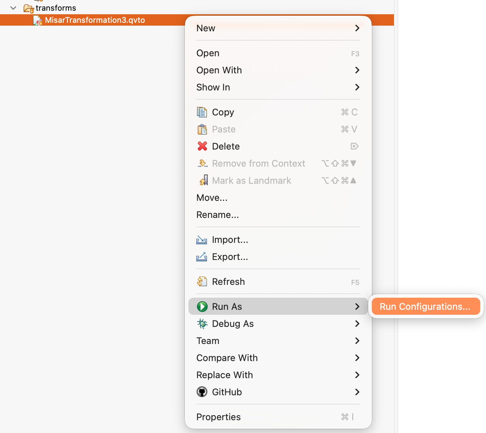
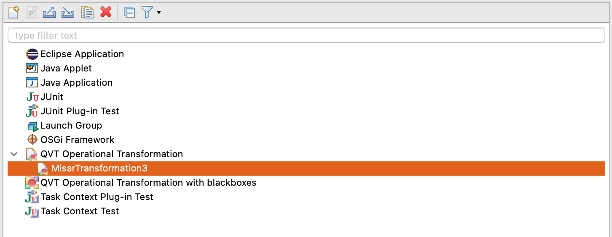
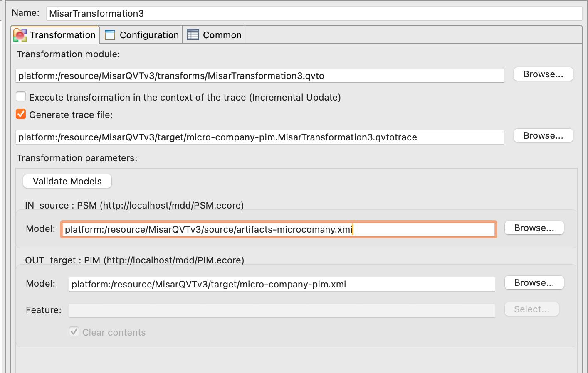
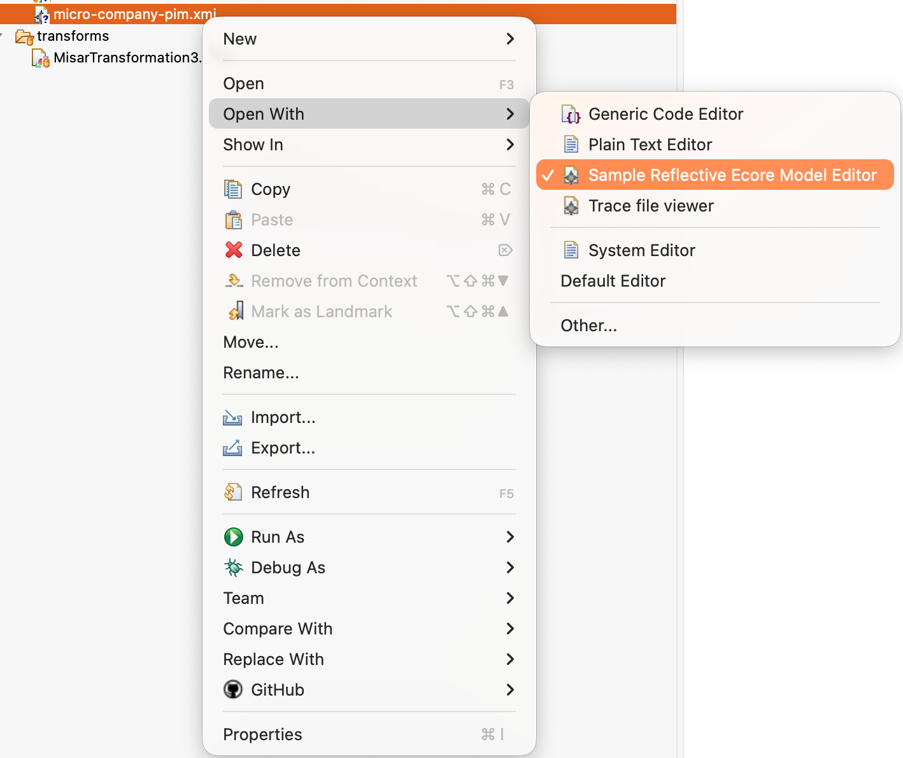
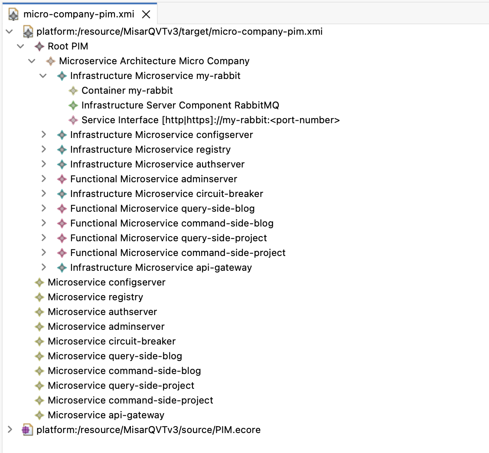

Create PIM (Platform Independent Model)¶
In this part, you will learn how to transform a generated PSM instance into a PIM instance using the MiSAR QVT transformation.
Before running the transformation, ensure that the PSM file generated by the parser is imported into the Eclipse project.
You can simply copy the generated PSM file into the Eclipse project directory.
This PSM file must be selected as the source model during transformation.
How to run the transformation¶
1. Open Transformation¶
Right click:
MisarTransformation3.qvto → Run As → Run Configurations

2. Select Transformation¶
Choose:
QVT Operational Transformation

You might don't see the MisarTransformation3 option. In that case, double-click on QVT Operational Transformation and it will appear in the list. Then select it and click Run.
3. Configure Input/Output¶
Input (PSM)¶
Select generated PSM file (.xmi)
NOTE: If the file is not present in the project, it will not appear in the selection list.
Output (PIM)¶
Choose output location and filename

The output name might automatically add .PIM extension. You can keep it or change it to .xmi.
Since V2026-05-11 of the Graphical Model Generator (GMG), MISAR supports both .PIM and .xmi extensions for the output PIM file. The content will be the same regardless of the extension used.
Run Transformation¶
Click Run
For Debug Purposes: You can click on Generate trace file to create a trace file that helps you understand the transformation process and debug if necessary.
This option is not required for the transformation to work.
View Output¶
Right click generated file → Open With → Sample Reflective Ecore Model Editor

Result¶
You will see: - Microservices - Functional vs Infrastructure services - Dependencies

This PIM instance can now be used for detailed analysis, design, etc. It serves as a platform-independent representation of the system, allowing you to focus on the high-level architecture and design without worrying about platform-specific details.
Next Steps¶
In case you want to create visualisations of the generated PIM, you can use the Graphical Model Generator (GMG) to inspect and understand the recovered architecture in more detail.
The GMG can generate several outputs from the PIM, including:
- Excel summary sheets
- dependency views
- architectural views
- per-microservice views
- UML-style visualisations
- SVG outputs for larger diagrams
These outputs can help you analyse the recovered architecture, review service dependencies, inspect individual microservices, and use the generated results in reports or documentation.
Use the Graphical Model Generator Guide to learn how to generate and navigate these outputs.